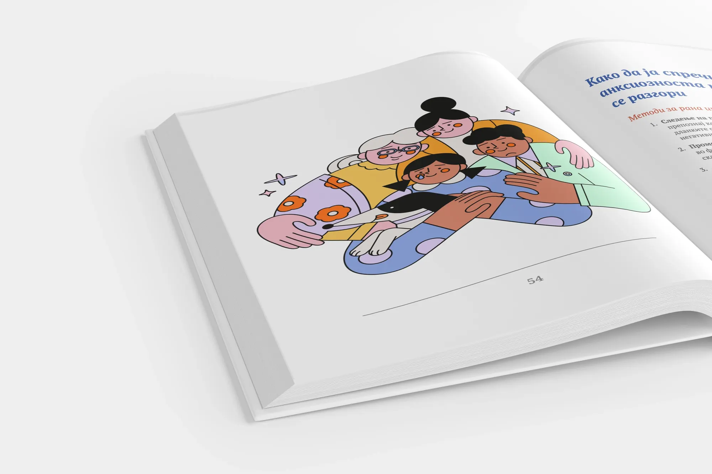
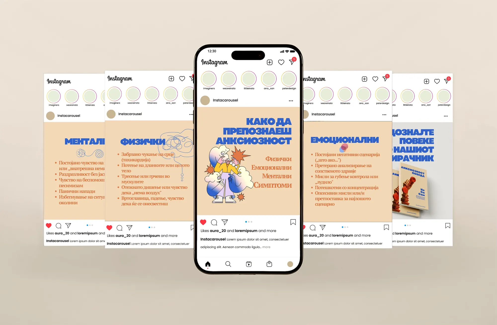

Anks
ioznostHelping ease anxiety with warmth and understanding.
- Brand Strategy
- Art Direction
- Editorial Design
- Illustration Direction
- Design Systems
- Print Production
Led the complete visual identity and print design for a mental wellness book — a project requiring both creative vision and empathetic design thinking.
Started by developing a color system of soft, desaturated tones that would feel calming rather than clinical. Every illustration was directed to make complex psychological concepts feel approachable and supportive, translating abstract emotions into clear, comforting visuals.
For typography and layout, readability came first. Elegant, accessible typefaces with generous white space and clear hierarchy — ensuring readers could focus on the content without visual fatigue.
Beyond the book: logo, brand guidelines, digital assets, social templates, and launch campaign materials. The cohesive system drove a 30% increase in social engagement and helped exceed initial sales projections.



